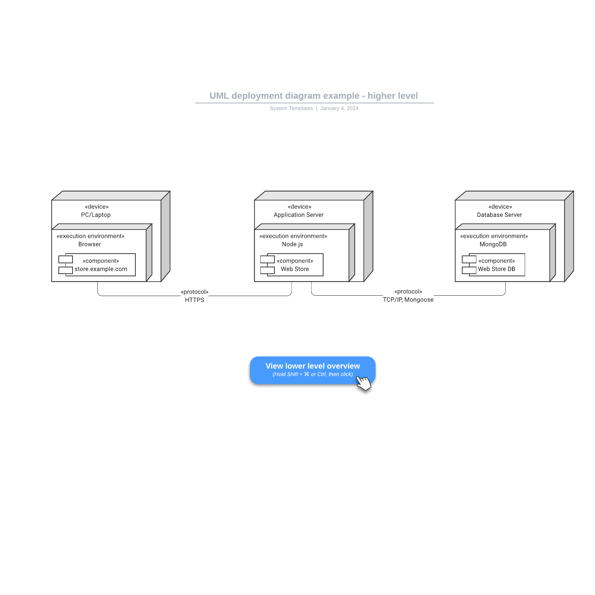
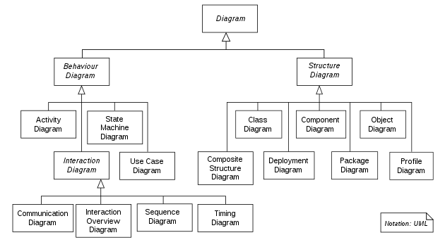
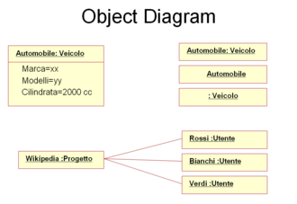
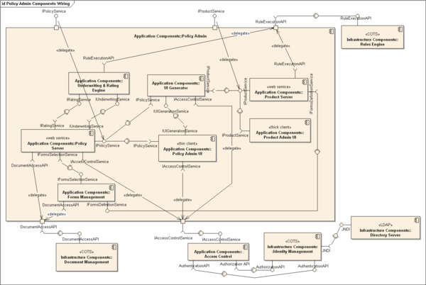
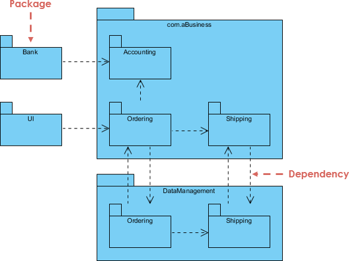
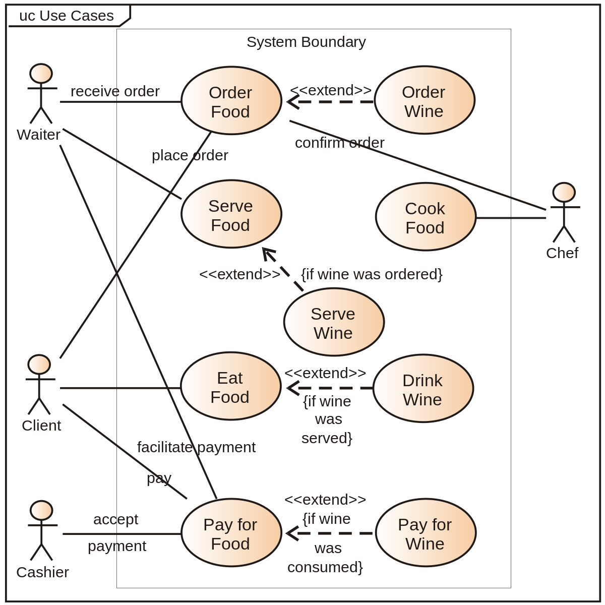
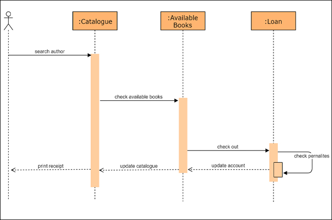
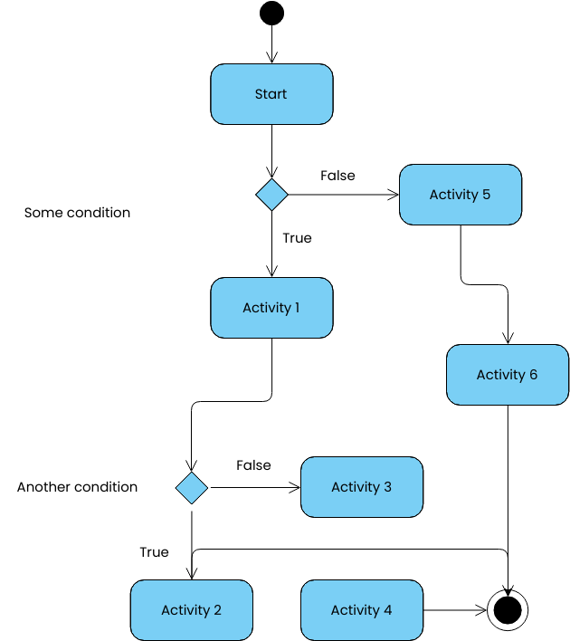
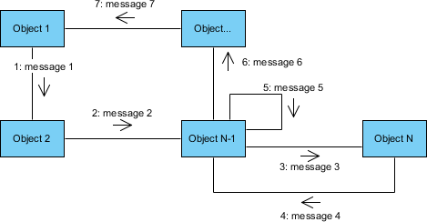
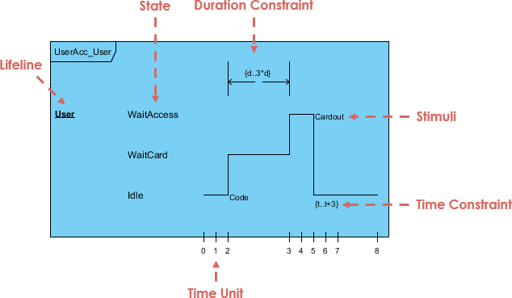

UML diagrammid
Ühinenud modelleerimiskeel (UML) toimib standardiseeritud märgendusena süsteemide ja tarkvara visualiseerimiseks, pakkudes graafilist esitlust, mis suurendab arusaamist. Vaatleme peamisi kategooriaid ja põhidiagramme:
Struktuuridigrammid:
- JuurutusDiagrammid:Juurutusskeemid näitavad, kuidas tarkvara süsteemi riistvarakomponentidele juurutatakse. Need diagrammid on kõige kasulikumad süsteemiinseneridele ning tavaliselt näitavad need jõudlust, mastaapsust, hooldatavust ja teisaldatavust. Kui riistvarakomponente kuvatakse üksteise suhtes, on lihtsam jälgida kogu riistvaravõrku ja veenduda, et juurutamisel võetakse arvesse kõiki elemente. 
- Klassi diagrammid: klassi diagramm on teatud tüüpi staatiline struktuuriskeem, mis kirjeldab süsteemi struktuuri, näidates süsteemi klasse, nende atribuute, toiminguid (või meetodeid) ja objektide vahelisi seoseid 
- Objekti diagrammid: Näitavad klasside eksemplare ja nende suhteid teatud ajahetkel. 
- Komponendi digrammid: Tõstavad esile füüsiliste komponentide ja nende vaheliste seoste struktuuri süsteemis. 
- Paketti diagrammid: Pakendiskeem on struktuuriskeem. See näitab teatud vaadet modelleeritud süsteemi struktuurile. Esitlus sisaldab tavaliselt , pakettide ühendamist, pakettide importi ja sõltuvussuhteid. Pakettskeemil on palju kasutusvaldkondi. UML2 metamudel ise on jagatud pakettideks ja UML 2.0 Superstructure spetsifikatsioonis on iga keeleüksuse jaoks paketiskeem, mis esindab organisatsiooni alampakettidena. Tarkvarasüsteemide modelleerimisel kasutatakse sageli ka pakettskeeme. Sealsed paketikaardid kujutavad näiteks tarkvara kihilisust või tarkvara jaotust mooduliteks. Ärimudelite puhul kasutatakse pakke sageli tehniliselt seotud mudeliosade kombineerimiseks, näiteks ärijuhtumiteks. Pakettskeem näitab seejärel ülevaadet ärijuhtumitest. 
Käitumisdiagrammid:
- Use Case diagrammid: Kasutusjuhtumite diagrammid kajastavad kasutusjuhtumeid ja suhteid osalejate ja süsteemi vahel; need kirjeldavad süsteemi funktsionaalseid nõudeid, viisi, kuidas välised operaatorid süsteemi piiril suhtlevad, ja süsteemi reaktsiooni. 
- Järjestus diagrammid: Järjestusdiagrammid on käitumise struktureeritud esitused aja jooksul järjestikuste sammude jadana. Neid kasutatakse selleks, et kujutada töövoogu, sõnumite edastamist ja seda, kuidas elemendid üldiselt aja jooksul tulemuse saavutamiseks koostööd teevad. 
- Tegevus diagrammid: Tegevusdiagrammid modelleerivad süsteemi käitumist ja viisi, kuidas need käitumised on seotud süsteemi üldises voos. 
- Suhtlus diagrammid:Suhtlus diagrammid näitavad elementide vahelisi koostoimeid käitusajal, visualiseerides objektidevahelisi suhteid. 
- Komposiitstruktuuri diagrammid:Komposiitstruktuuri diagrammid on kasulikud keeruka klassi sisemise töö mõistmiseks ja klassi kujunduse dokumenteerimiseks
- Ajastus Diagrammid:Ajastusdiagramm, mida sageli kirjeldatakse ümberpööratud järjestusdiagrammina, näitab, kuidas objektid teatud aja jooksul üksteisega suhtlevad. Kasuta neid diagramme, et näha, kui kaua protsessi iga etapp aega võtab, ja leida parenduskohti. 
- Masina oleku Diagrammid:kasutatakse süsteemi käitumise visualiseerimiseks vastuseks sündmustele. See näitab erinevaid olekuid, milles süsteem võib olla, ja üleminekuid nende olekute vahel, mille käivitavad konkreetsed sündmused.